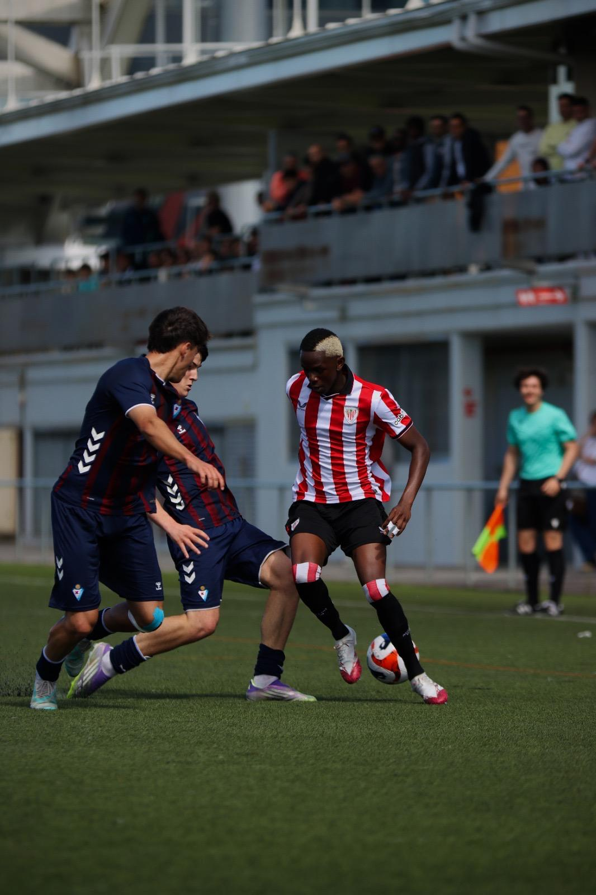

Exigencia física y posicionamiento

En categorías superiores y torneos de nivel, la velocidad del juego aumenta notablemente. Se requiere una máxima concentración en el posicionamiento táctico para no interferir en las jugadas y tener un ángulo despejado.